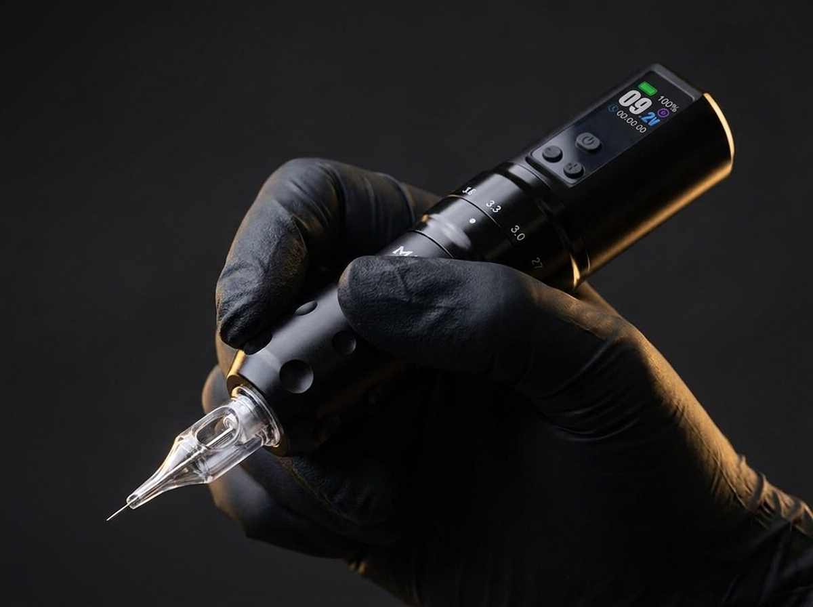

Behandelgids

Scalp micropigmentatie (SMP) is een niet-chirurgische behandeling waarbij duizenden micro-pigmentpuntjes in de hoofdhuid worden aangebracht om de illusie van kortgeschoren haarfollikels te creëren. Het resultaat is een strak gedefinieerde haarlijn en de uitstraling van meer dichtheid, zonder operatie en zonder hersteltijd van betekenis.
Met gespecialiseerde micro-naalden wordt pigment in de bovenste laag van de hoofdhuid aangebracht. Elk puntje wordt met de hand gepositioneerd om in grootte, richting en diepte op een natuurlijke haarfollikel te lijken. Doordat er met meerdere pigmenttinten en -diepten wordt gewerkt, ontstaat een driedimensionaal effect dat ook van dichtbij overtuigend oogt — in plaats van een vlakke, uniforme schaduw.
SMP wordt toegepast bij een breed scala aan situaties:
Of SMP de juiste keuze is, hangt af van onder meer huidtype, de mate en het patroon van haaruitval en persoonlijke voorkeur. Dit wordt tijdens het consult in kaart gebracht.
Elk traject begint met een persoonlijk consult. Samen wordt gekeken naar de mate van haarverlies, de gewenste dichtheid en een haarlijn die aansluit bij gezichtsvorm, leeftijd en stijl. Geen twee haarlijnen zijn hetzelfde — het ontwerp wordt volledig op maat gemaakt.
De behandeling wordt opgebouwd over meerdere sessies, waarbij per sessie een nieuwe laag pigment en definitie wordt toegevoegd. Deze gelaagde aanpak voorkomt een té donker of onnatuurlijk resultaat en zorgt dat de overgang naar bestaande haargroei geleidelijk verloopt.
Na afloop ontvangt u uitgebreide nazorginstructies. Afhankelijk van huidtype en levensstijl kan een periodieke touch-up na enkele jaren de scherpte en kleurdiepte verfrissen.
De meeste trajecten bestaan uit 2 tot 3 sessies, verspreid over enkele weken. Dit geeft de huid tussentijds rust en maakt het mogelijk om resultaat en dichtheid tussentijds te evalueren voordat de volgende laag wordt toegevoegd.
De meeste cliënten omschrijven de sensatie als mild en doof, vergelijkbaar met een lichte tatoeage. Op verzoek wordt een verdovende crème toegepast om het comfort tijdens de sessie te verhogen.
Met de juiste nazorg blijft SMP jarenlang goed zichtbaar. Pigment kan, net als bij elke vorm van pigmentatie, in de loop der jaren licht vervagen door zonlicht en huidvernieuwing. Een touch-up kan dit eenvoudig verfrissen.
Een haartransplantatie verplaatst eigen haarfollikels en levert echte, groeiende haren op, maar vraagt een operatie, hersteltijd en is niet voor iedereen geschikt — bijvoorbeeld bij onvoldoende donorhaar. SMP is niet-chirurgisch, heeft nauwelijks downtime en creëert de visuele illusie van dichtheid of een geschoren look. De twee technieken worden ook vaak gecombineerd: SMP om transplantatielittekens te camoufleren of om de ogenschijnlijke dichtheid tussen getransplanteerd haar te verhogen. Lees meer in SMP of haartransplantatie? De verschillen op een rij.
Elk traject begint met een persoonlijk, vrijblijvend consult in Oisterwijk.
Plan een consult